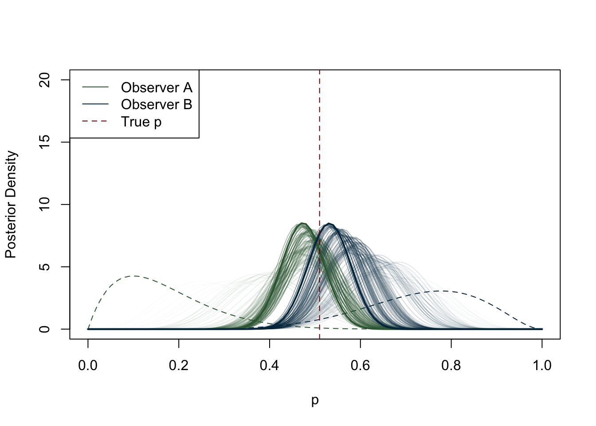

6 Methods
Page under construction
6.1 Introduction
This chapter presents the methodology employed to carry out this study. The first section discusses statistical computing programming languages such as R. The second section introduces databases and their employment in archaeology, then outlines the construction of the database used for this research. GitHub as a hosting service for this research is discussed in section three. The fourth section describes the logic behind the choice of the temporal boundaries, the creation of chronologies and presents a possible solution to mitigate the problem of chronological fuzziness of samples.
6.2 Data collection
This section focuses on the data collection phase, complementing the data entry process discussed in the database chapter (Chapter 5). The research uses legacy or published archaeobotanical and zooarchaeological data from a variety of sources such as monographs, book chapters, journal articles, conference papers, excavation reports, websites, and dissertations. The site bibliography provides a comprehensive list of these sources, while Figure 5.2 offers a graphical overview of the distribution of primary data sources. A few existing syntheses of archaeobotanical and zooarchaeological data (cf. Chapter 2) significantly contributed to the foundation of the database. The data was then organised and stored in a relational database, as detailed in the previous chapter. The publications selected met a number of criteria. Only trusted academic publications were considered, with a requirement for precise site location information or specific geographical context. Only sources that reported raw counts of plant and animal remains were selected. While data quality varied, efforts were made to include details from older excavation reports, albeit with some limitations. Comprehensive information, including sampling strategies, stratigraphic unit (SU) numbers, preservation methods, and sampled soil volume, were incorporated where available. To ensure robust statistical analysis and meaningful results, certain exclusions were necessary. Sporadic finds and low-quantity samples were omitted from particular analyses (e.g., PERMANOVA and nMDS) but retained in the database for comprehensive documentation. For plant and animal taxa, clear and unambiguous taxonomic indications were required for inclusion in the database. For example, plants belonging to the Triticum group that could not be further identified to species level were classified as ‘Unsp. Cereals’. Similarly, animal bones that were either unidentified or identified only by size (e.g. large ungulates) were stored as ‘unidentified’ to avoid potential confusion with other taxa.
The samples selected for this research come from sites that fall within the spatial and chronological boundaries of the study. Inclusion criteria encompassed sites within mainland Italy, dating from the 1st century BCE to the 11th century CE. In order to assess the geographical differences within the peninsula, and to simplify the statistics, the region under review was ideally divided into three parts: Northern, Central, and Southern Italy. Northern Italy lies between today’s northern limit and the latitude of about 43°N, the centre between about 42°N and 41°N, and the south from about 40°N to the southern limit of Calabria. To facilitate this division, the boundary of today’s regions was followed (Table 5.6). Although the region of Abruzzo is currently considered part of southern Italy for cultural reasons, it has been included in central Italy following a geographical logic. Although there are important micro-ecological differences, each of these three regions has coastal, plain, hilly and mountainous areas. The choice of boundaries was based on other geographical studies of ancient Italy (Palmisano et al., 2021; Parkinson et al., 2021).
Chapter 5, outlines site details, including location, geographical features, site type, and culture. Whenever it was not possible to assign a site to a specific culture (e.g. Byzantine, Lombard, etc.), this field was filled in generically with the corresponding chronology. For this project, decisions have been made on how to classify archaeological sites for the purposes of collecting statistical data and storing it in the database. While some sites are relatively easy to identify and categorise, there can be uncertainty, for example, in classifying sites as urban or rural, as these terms can have different meanings in the context of archaeology. The problem of correctly defining a settlement is not new to archaeological theory, and there have been several attempts to define the concept of ‘site’ itself (Bowes, 2020, p. 11; Davis, 2020; Dunnell, 1992; Parsons, 1972; Trigger, 1967). In order to ensure accurate categorisation, it was essential to consider the specific context and characteristics of each site, as well as the definitions and criteria used to classify them. This meticulous approach allowed for a robust selection of sites falling within the spatial and chronological boundaries of the study, thus ensuring the reliability and relevance of the data collected. For example, isolated and smaller settlements that did not have the typical characteristics of the Roman (Gros and Torelli, 2014) or medieval (Heers, 1995; Piccinato, 1993) city (public buildings, etc.) were recorded as “rural”. In the majority of cases, the site classification adhered to the original categorization provided by the respective authors.
Another criterion for selecting a sample was its chronology. Each sample (or collection of samples) had to be associated with a chronological range in centuries or years. Where reports gave only vague chronologies, such as ‘Roman’ or ‘early Medieval’, the report was discarded. This approach minimises the risk of misinterpretation when analysing the data. In many cases, publications report chronologies expressed in phases; if these phases were undated, the sample was not included in the database. The scale of detail for samples from the same site entered in the database is contextual and chronological. If the same context (e.g. ‘Room A’) provided several samples for the same chronological range, these were merged. This choice, although it may result in a loss of scale of detail, was necessary for reasons of time and resources. Most of the statistics performed on the dataset are based on a sample periodisation, from the Roman Age to the Medieval Age. The chronologies were defined as follows:
[R] Roman: from the 1st century BCE to the 2nd century CE.
[LR] Late Roman: from the 3rd to the 5th century CE.
[EMA] Early Middle Ages: from the 6th to the 10th century CE.
[Ma] Middle Ages: from the 11th century CE onwards.
In the database, the tables faunal_chronologies and plants_chronologies connect each bioarchaeological sample to another table with the identification numbers for the periods (e.g. Sample 1 = ID 1). If a sample has a chronology ranging between two periods, two separate entries will be recorded on the database (e.g. Sample 1 – 2nd to 3rd c. CE = Periods: Roman, Late Roman) with the result of the sample being repeated in both periods.

One of the methodological issues affecting this project is that of chronological fuzziness. Dating plant and animal remains using radiocarbon is very rare, at least in the samples recorded in the database. Most of these samples are dated using ceramics, and chronologies can range between one century or several. Rather than creating arbitrary weights that would affect the models in unexpected ways, all samples were considered to have the same weight and impact on the calculations. For example, if a sample spans three centuries, it is difficult to say whether the layer was formed in three centuries (e.g. a waste pit used over a long period), or whether the dating of that layer is less precise because a particular type of pottery was used over a long period.
6.3 Statistical analysis
Section structure
Statistical approaches (statistical computing)
Software (R and packages)
What methods are applied to this thesis, why are there frequentist bits
Ecological analyses: ubiquity, richness, diversity
What is hypothesis testing? ANOVA and PERMANOVA
Say why I used PERMANOVA
What are the problems of HT? Get the reader ready for the Bayesian approach and try to find a way to justify the frequentist bits of this thesis.
Multivariate statistics
General introduction
Why they did not work in this thesis to explore the data?
Dimensionality reduction: nMDS - it is non parametric. Say why I used it.
Statistical computing, often referred to as computational statistics, is a branch of statistics that uses computational approaches to solving statistical problems. Traditionally, the term statistical computing places more emphasis on numerical methods, while computational statistics refer to topics such as resampling methods, exploratory data analysis, neural networks, etc. (Rizzo, 2019). Specifically, computational statistics deals with methods “unthinkable before the computer age” (Lauro, 1996). In archaeology, one widely used programming language for statistical computing is R, which has the advantage of relying on its strong academic community. The community actively contributes to the development of new packages, expanding the functionality and versatility of R for statistical computing. Researchers often choose R for statistical computing in archaeology due to its comprehensive statistical capabilities, flexibility, and the ability to reproduce and share analyses. The syntax and structure of R are specifically designed to facilitate data analysis and statistical modelling, allowing researchers to perform complex analyses efficiently. Additionally, R provides powerful data visualisation tools, enabling researchers to create visually appealing and informative graphs to communicate their findings.
6.3.1 The R programming language
R, as described on the R-Project FAQs is a “system for statistical computation and graphics. It consists of a language plus a run-time environment with graphics, a debugger, access to certain system functions, and the ability to run programs stored in script files”. Increasingly popular for data scientists, R is based on S and provides its own IDE (the R GUI), although RStudio1 is the most popular IDE for computing the R language. For this project, RStudio was the standard IDE.
6.3.1.1 R Packages
In addition to base R, several packages enhance its performances and offer more tools to users. The packages are distributed by the official CRAN repository, which counts more than 19,877 packages2. This section details some of the packages that have been most useful for this research.
6.3.1.1.1 tidyverse
The tidyverse ecosystem (Wickham et al., 2019) is a core set of packages for R, maintained by Hadley Wickham for importing, tidying, transforming and visualising data which includes packages such as—ggplot2, dplyr, tidyr, stringr, tibble, forcats, purr, readr.
6.3.1.1.2 ggplot2
ggplot2 is the most common data visualisation package for R, included in the tidyverse environment. The package substitutes the R base graphics and allows visualisation of single and multiple components (Wickham, 2016).
6.3.1.1.3 knitr
The knitr engine enables the integration of R with HTML, Markdown and LaTeX. The package allows reproducible research (Xie, 2021) and was used for generating dynamic reports and documentation for this thesis.
6.3.1.1.4 vegan
The vegan package (Oksanen et al., 2022) is designed for ordination methods, diversity analysis and multivariate analysis in ecology.
6.3.1.1.5 rethinking
The rethinking package (McElreath, 2023) provides tools and resources for statistical modeling and data analysis in a Bayesian framework. Developed by Richard McElreath, it is specifically designed to support the concepts and techniques described in his book “Statistical Rethinking: A Bayesian Course with Examples in R and Stan” (McElreath, 2016).
6.3.2 Archaeobotanical quantifications
To be written
Write that certain species have been identified as sp. or that others are merged (triticum a/d) because hard to tell apart
Quantitative analysis of the archaeobotanical remains collected proved difficult due to several biases in the dataset which, if not controlled, could lead to erroneous results. In fact, the majority of published archaeobotanical material can be attributed to judgemental/feature-based sampling, which introduces biases as outlined in the SIGNPOST chapter. Given the paucity of Italian archaeobotanical samples available for the period compared to other European countries (cite McKerracher?), and given that many samples contained outliers, it was not possible to adopt a purely quantitative strategy using the raw counts, but the data had to be processed in other ways. Before going any further, let us consider three sites to give a practical example of the outliers that were so common in the dataset: Parma (Piazza Garibaldi/via Cavestro), Miranduolo, Brescia (via Alberto Mario). The sample from the Parma excavation, Piazza Garibaldi/via Cavestro, comes from an urban cesspit and the seeds have been preserved by waterlogging (Bosi et al., 2012, 2011). In this sample, certain taxa skew the distribution and under-represent other plant remains. In the case of the mid 8th to mid 9th century samples from the rural village of Miranduolo, charred samples were taken from layers of a storehouse and storage pits. The outlier here is represented by Triticum aestivum/durum (4,037 seeds) and cereals in general, which have much higher counts compared to legumes or fruits (Buonincontri et al., 2014). In other cases, excavators may have taken samples from layers where a large conglomerate of seeds was visible to the naked eye. For example, in Brescia, via Alberto Mario, a small food store contained a large number of charred seeds of Panicum miliaceum (more than 21,000, after which the researchers stopped counting) and Triticum monococcum (750 seeds). Apart from these taxa, other plant remains were found in much smaller quantities (Castiglioni and Rottoli, 2019). It is clear here how the location of the samples affects the type of taxa we might expect to find: cereals are much more common than other taxa in food storage areas, whereas other seeds ingested by humans (figs, strawberries, grapes, etc.) might be expected to be found in cesspits (Smith, 2013). In addition to the biases that may be introduced by the choice of sampling strategies, as discussed in Chapter 3, other problems may arise, for example, from the way in which plant remains are preserved. Once again, Figure 3.2 and Figure 3.3 give a breakdown of the way in which seeds are preserved under different conditions.
In order to ignore these sources of bias, we would need a very large dataset so that outliers would have less effect on the calculations. Since this is not the case, we need to take precautions to avoid jumping to false conclusions. The first is to transform the data and the second, discussed later, is to use a statistical modelling approach. When it comes to numerical transformations for statistical analysis, there are several examples and approaches in the scientific literature (CITE). Unfortunately, none of them are helpful for outliers of this nature; each site presents its own unique problems. Although Heinrich (2017) argues for the need for quantitative archaeobotanical analyses that go beyond presence/absence categories, with the current state of information available for the 1st millennium CE Italian peninsula, this is simply not yet possible. For this reason, most of the analyses of the palaeobotanical dataset presented in this study are based on the presence of particular species in each context. Numerically, this means that raw counts are converted to 1 to indicate that a taxon is present, and to 0 to indicate that it is absent from a sample. Although much safer than other types of data transformation, this transformation has a strong effect on the data and inevitably changes the range of questions that can be asked of our dataset. Within each sample, the data is flattened and the importance of a taxon relative to other taxa in the same context is lost. Instead of asking questions such as “What was the most abundant plant in Roman rural sites?”, we can only ask “Which plant was most frequently found in Roman rural sites?”.
In one case, for demonstration purposes, the samples were transformed in a different way in order to preserve the quantitative information. In chapter Chapter 7 it is possible to see how different strategies affect the quantification of cereals at different stages. This short case study was chosen because cereals are present in most samples (unlike legumes, for example) and because the chronological division is the one that creates the least imbalance in the data. Other groupings, for example based on site type, would have distorted the results as smaller group sizes are unreliable, especially when frequentist approaches to statistics are used. The purpose of the transformations was to see how the proportions of cereals changed over time. In the first example (Table 7.10), simple means were calculated based on the total number of cereals. Whenever a cereal taxon was not present in a sample, its proportion was considered to be 0. In addition, the means are also affected by any other cereal outliers present in the samples. The second example (Table 7.11) shows instead the means calculated on the basis of true presences, excluding missing values (NAs). This type of calculation deals well with zero-inflated columns (i.e. cereal taxa that are rarely present in a sample), but runs the risk of over-representing rare species. Moreover, the results are still biased by the outliers present in the sample. The third example (Table 7.12) uses a different approach. This method involves converting the data into relative ranks using the decostand() function found in the vegan package (Oksanen et al., 2020). This transformation replaces the original count data with their corresponding increasing ranks, while leaving zeros unaffected. The result is that the taxon with the highest abundance is ranked as 1. This process has the effect of mitigating the effects of pronounced variations within the data, effectively smoothing out extreme values. Crucially, however, it preserves valuable information about the relative abundance of taxa. The values in these tables will be commented on later, but what is important to note here is how different strategies yield different figures, and how important it is to be careful when working with biased datasets. The optimal choice, although very limiting, is to work on presence/absence.
6.3.2.1 Ubiquity
Ubiquity, or presence analysis, is a popular approach in archaeobotanical quantitative analysis. The method is straightforward—the number of sites/contexts where a plant is present is divided by the total number of sites/contexts under examination. If, for instance, an olive pit is present in 3 sites out of 10, the ubiquity for the olive will be 30%. The formula for the calculation is at follows:
\[ U_x = (\frac{N_p}{N_{tot}}) \cdot 100 \] where \(N_p\) is the number of presences, and \(N_{tot}\) is the total number of contexts. The result can be multiplied by 100 to obtain a score in %.
This approach has both advantages and drawbacks. Presence analysis minimizes the impact of outliers (overrepresented plant species) on calculations (Wright, 2010, pp. 51–52), but the relative importance of a plant in a particular context is lost. It is also important to keep in mind that taxa richness is influenced by factors including sample size, deposition and preservation modes, and sampling strategies (e.g. sieving methodologies) (Banning et al., 2000; Pearsall, 2015, pp. 161–2). In general, larger sample sizes tend to produce more diverse samples, while smaller samples under-represent rarer species (Kadane, 1988; Plog and Hegmon, 1993). Despite these limits, ubiquity is the best option for immediate reading of the botanical dataset of the Italian peninsula. The variability of the seed/fruit samples is too high, with different species being outliers in different sites. As mentioned earlier, the probable reason for this is probably the poor quality of sampling, which usually occurs after an agglomerate of seeds is found during excavation. Typically, agglomerates are found in specific storage or processing areas (e.g. wine/olive processing quarters), skewing the distribution of the curve. Ubiquity overcomes this problem by providing a score based on the percentage presence of a plant species in the samples considered.
In addition to the general calculation of the diachronic ubiquity across the entire peninsula, it is also important to look for regional differences in the archaeobotanical dataset. To do so, I created an R function to subset data related to northern, central and southern Italian regions. For a clearer reading of the plot, I divided the plants into–Cereals, Pulses and Fruits/Nuts. The results are presented in Chapter 7.
6.3.2.2 Richness and diversity
Species richness (\(S\)) is the number of species found within a community or ecosystem. The boundaries of the region are defined by the researcher. While ecologists use sampling or censuses to obtain the richness value, archaeobotanists can only rely on sampling, counting the presence of species in the area under investigation (Moore, 2013). Species diversity is a measurement of species richness combined with species evenness, meaning that it takes into account not only how many species are present, but also how evenly distributed the numbers of each species are. There are several diversity indices used in ecology, all of which include abundance in the calculation. Given the biases in the dataset discussed earlier, it is safer to calculate diversity by grouping the samples only chronologically, so that the imbalance in the groups is not too high. Species diversity can be a useful indicator of the centralisation of agricultural practices towards specialised production or the specialised storage/import of specific products. Two diversity indices are commonly used in archaeobotany: the Shannon Equitability Index (\(E_{H}\)) and the Simpson Index (D). Both of these measures range from 0 to 1, where a value of 0 indicates an uneven assemblage or low diversity, while a value of 1 indicates maximum diversity. The Shannon Equitability Index (\(E_{H}\)) assesses evenness by considering both species diversity and their distribution. In simpler terms, a higher \(E_{H}\) score indicates a more balanced spread of individuals among species. Also referred to as the Pielou index, this measure is a variant of the Shannon index (Hill, 1973; Pielou, 1966). Its calculation follows the formula: \[E_{H} = \frac{ - \sum\limits_{i=1}^{S} p_{i} \cdot \ln p_{i}}{\ln S}\]
Here, \(\sum\limits_{i=1}^{S}\) indicates the sum across all species, with \(i\) ranging from 1 to \(S\), representing the total number of species. \(p_{i}\) stands for the proportion (relative abundance) of the \(i\)th species, and \(ln\) signifies the natural logarithm. The term \(S\) denotes the total number of species in the ecological community.
The Simpson index, on the other hand, is a different measure of species diversity that emphasises dominance within a community. It quantifies the probability that two randomly selected individuals belong to the same species. Higher values of the Simpson Index indicate lower diversity, with greater dominance of a few species (Simpson, 1949). The calculation of the Simpson Index is given by the formula: \[D = 1 - \sum\limits_{i=1}^{S} p_{i}^2\] The terms of this formula are equivalent to the previous ones, with \(\sum\limits_{i=1}^{S}\) representing the sum across all species, with \(i\) ranging from 1 to \(S\). Again, \(p_{i}\) represents the proportion of the \(i\)th species. By subtracting the sum to 1, the Simpson Index (\(D\)) ranges from 0 to 1, where a value of 0 indicates maximum diversity (each species is equally abundant), and a value of 1 indicates minimum diversity (one species dominates the community).
Examining both measures together provides a more holistic view of the ecological characteristics of a community. The Shannon Equitability Index emphasises evenness, showing the balance of species distribution, while the Simpson Index highlights dominance and the prevalence of abundant species. The two indices presented above are not the only diversity and equitability indices available in scientific literature. Ecological diversity indices have indeed undergone several stages of critiques, with those advocating for better and more mathematically sound indices and those advocating that ecologists should stop using such indices and move on to other methods, such as multivariate analysis (Barrantes and Sandoval, 2009; Daly et al., 2018; Heip and Engels, 1974; Morris et al., 2014). In summary, although diversity indices can help to read the distribution of species within archaeobotanical samples, caution is required in their interpretation.
In this study, both diversity indices were applied to each sample in the dataset to produce a score. The diversity scores for each site were later modelled using a Bayesian approach, which is explained in more detail in the following sections of this chapter. The mathematical breakdown of the models specific to plant richness and diversity is presented in Section 7.2.
6.3.3 Statistical hypothesis testing
Explain what is hypothesis testing
6.3.3.1 PERMANOVA
Permutational multivariate analysis of variance (PERMANOVA) is a non-parametric multivariate statistical test used to compare group of objects. By using measure space, the null hypothesis that the centroids and dispersion of groups are identical is tested. The null hypothesis is rejected if either the centroid or the spread of the objects differs between the groups. A prior calculation of the distance between any two objects included in the experiment is used to determine whether the test is valid or not. (Anderson, 2017).
6.3.3.2 nMDS
Multidimensional scaling (MDS) is a technique to visualise the level of similarity of individual observations (e.g. sites/cases) in a dataset. MDS works with matrices containing Euclidean distances between each pair of observations. Conversely, non-metric multidimensional scaling (nMDS) is a rank-based approach that finds both:
A non-parametric monotonic relationship between the items in the dissimilarity matrix and the Euclidean distances.
The location of items in the low-dimensional space.
The goal of nMDS is to represent the pairwise dissimilarity between items in the matrix as closely as possible. For this reason, it is considered as a good technique for multivariate data visualisation. nMDS can be used on quantitative, qualitative and mixed data. The R function metaMDS from the package vegan allows users to select the distance metric most appropriate to their data (e.g. Bray-Curtis, Jaccard, etc.). As nMDS is an iterative approach, meaning that the the computations are run until the best solution is found, it can be quite computationally demanding for larger datasets. Although the nMDS algorithm tries to minimize the ordination stress, it is a good practice to compute the ordination stress value to judge the reliability of the solution found (goodness-of-fit). Ordination stress indicates how much distorted are the fitted data when compared to the original observed samples. Stress values can also be visualised with the function stressplot() (vegan package), which produces a Shepard stressplot (Figure 6.2).

The Shepard plot displays the ordination distance against the observed distance. Ideally, the higher the points should fall on a monotonic line, where an increased observed distance is related to an increased ordination distance. Moreover, the higher the number of dimensions, the lower the stress value. If interested in choosing the appropriate number of dimensions, it is possible to use a scree plot which shows the number of dimensions against the stress level. Generally, it is possible to interpret stress values following these guidelines (Dexter et al., 2018):
| Interpretation | Stress level |
|---|---|
| Excellent | < 0.05 |
| Good | < 0.1 |
| Usable (but caution is required) | > 0.2 |
| Random | > 0.3 |
If the solution has produced a good stress level for the number of dimensions required, it is possible to plot the nMDS and interpret the results. Points that plot closer together are more similar, while points that are distant one to each other are more different. The nMDS plot can also be useful in recognizing groups (points grouping together and plotting further from other points). An example is provided in Figure 6.3.
In this project, nMDS has been applied to the Roman and early Medieval cereal datasets, with the scope of dimensionality reduction. The dataset has been reduced to one dimension to show a greater degree of separation between Northern and Southern Italy in the early Middle Ages. The entire process of data preparation and processing is described in WRITE WHERE.
6.4 Bayesian approach and multilevel modeling
Discuss the rationale for using a multi-source archaeological study, integrating environmental proxies such as animal and plant remains. Explain the significance of using a Bayesian approach to multilevel modeling and the application of beta-binomial models for data analysis. Justify the use of the selected datasets and the importance of a holistic approach.
Discuss the use of a Bayesian approach in the analysis.
Modeling counts
Intro to regression?
Explain the principles and advantages of multilevel modeling for the research design.
Appropriateness of the statistical method (Guisan et al, p. 55). Different types of data require different approaches and different probability distribution functions
Describe how the beta-binomial models were applied to account for overdispersion and class imbalance in the datasets.
Independence of observations: In the case of our type of data, this is not really possible so it is already violating this assumption
Why do we use credible intervals? http://doingbayesiandataanalysis.blogspot.com/2012/04/why-to-use-highest-density-intervals.html
6.4.1 Betabinomial
Show the beta distribution and explain the precision values.
Material: https://medium.com/(ro.mo.flo47/the-beta-binomial-model-an-introduction-to-bayesian-statistics-154395875f93?)
https://stats.stackexchange.com/questions/297901/choosing-between-uninformative-beta-priors/298176#298176
6.4.2 Precision plots
The following plots for the posterior distributions of the beta-binomial models will also come with a precision parameter \(\phi\), that shapes the beta curve. What is the correct way to interpret it? A \(\phi\) value smaller than 2 indicates that there is extreme overdispersion in the dataset, and that probabilities around 0 and 1 are more likely than the mean. On the contrary, a \(\phi\) value greater than 2 indicates more precision in the dataset. Although this is often the case of larger datasets, where most of the values shrink towards the average, it also indicates a coherent dataset (where values are similar). Finally, if \(\phi\) equals 2 every probability between 0 and 1 is likely possible.

6.5 Integration of Data Sources
Explain how the integration of different data sources was carried out.
Discuss the rationale behind integrating archaeological, environmental, and textual records for a comprehensive analysis.
Describe any challenges or considerations encountered during the integration process.
6.6 Evaluation of Agricultural Strategies
Detail the methods used to evaluate agricultural strategies during the transition from the Roman Empire to the early medieval period in Italy.
Discuss the factors considered in assessing the role of political organization, economy, culture, and environment in shaping agricultural regimes and animal/plant husbandry selection.
6.7 Limitations and Assumptions
Discuss any limitations or assumptions associated with the methods used.
Address potential biases or uncertainties in the data collection or analysis process.
Explain how these limitations were managed or considered in the interpretation of the results.
6.8 GitHub: hosting the project
Section under construction
This section will include a general intro to GitHub and why I chose to host data there.
The code and the datasets used to build this research will be hosted publicly on GitHub to allow reproducibility.